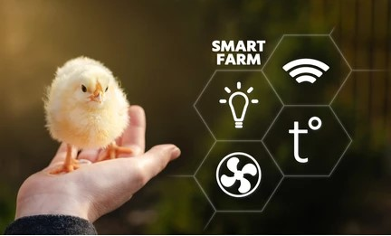

Our alert system allows farmers and experts to communicate effectively about potential disease outbreaks. Local farmers can create alerts to inform others about any outbreaks in their area, ensuring that everyone stays informed and takes necessary precautions. Experts can also log in to share critical updates and information about potential threats.
